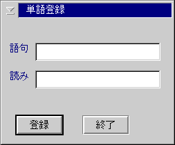

The default register word part window is the object window to communicate with the IME window. The default register word part window creates the register word dialog when the default register word part window receives the request of displaying the dialog panel. The design of the register word dialog is following:
When the register word dialog is shown, the word (GOKU) field and the reading (YOMI) field are initialiezed by the register word part data and the word type (HINSHI) list box is filled with the register word types gotten by ImQueryRegisterWordType API. If the register word type information can not be gotten, the word type (HINSHI) list box is disable and hiden.
When an user presses the register (TOUROKU) button, the register word dialog issues ImRegisterWord.
When an user presses the exit (SYURYOU) button, the register word disalog is hiden itself without calling ImRegisterWord.
At this release, the maximum lenght of the word field is 40 bytes. The
maximum lenght of the reading field is 20 bytes.
WM_CREATE
The default register word part window sets the its window handle to the
window data of the owner window by using WinSetWindowULong with QWL_IMEW_HWNDREGWORD.
WM_DESTROY
If the defualt register word part window creates the register word dialog,
the default register word part window destroys the register word diallog
.
WM_IMEREQUEST
IMR_REGWORD( IMR_REQWORD_SHOW)
When the default register word part window receives the first WM_IMEREQUEST (IMR_REQWORD, IMR_REGWORD_SHOW) message, the default register word part window loads the register word dialog and shows the loaded register word dialog.
When the default register word part window receives the next WM_IMEREQUEST
(IMR_REGWORD, IMR_REGWORD_SHOW) message, the default register word part
window show the register word dialog.
IMR_REGWORD( IMR_REQWORD_HIDE)
When the default register word part window receives the WM_IMEREQUEST (IMR_REGWORD, IMR_REGWORD_HIDE) message, the default register word part window hides the register word dialog.
Comparison with Windows 95